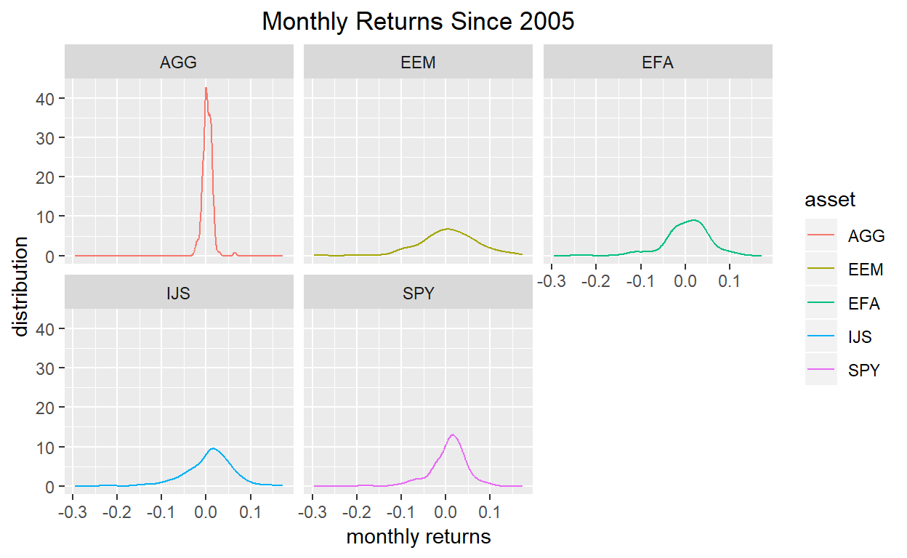
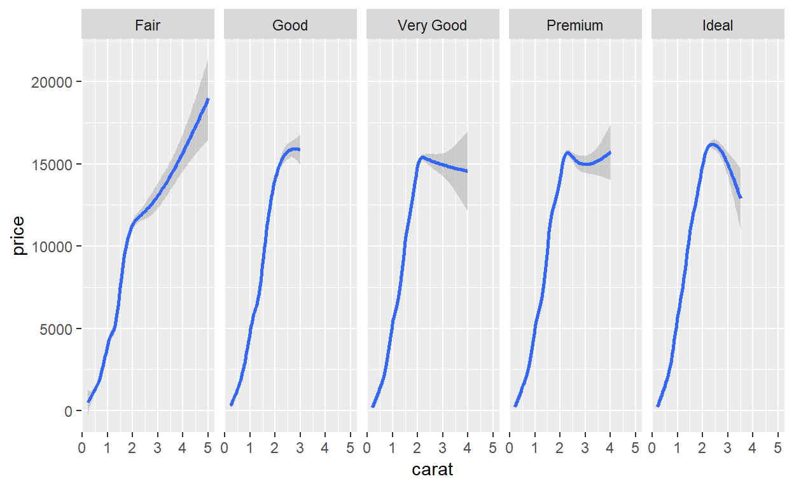

Here’s the portfolio we’ll be visualizing the assets of:
- SPY (S&P 500 fund) weighted 25%
- EFA (a non-US equities fund) weighted 25%
- IJS (a small-cap value fund) weighted 20%
- EEM (an emerging-mkts fund) weighted 20%
- AGG (a bond fund) weighted 10%
Let’s load up our packages.
library(tidyverse)
library(tidyquant)
library(timetk)
library(tibbletime)
library(highcharter)To get our objects into the global environment, we use the next code chunk, which should look familiar from the previous post: we will create one xts object and one tibble, in long/tidy format, of monthly log returns.
# The symbols vector holds our tickers.
symbols <- c("SPY","EFA", "IJS", "EEM","AGG")
prices <-
getSymbols(symbols, src = 'yahoo', from = "2005-01-01",
auto.assign = TRUE, warnings = FALSE) %>%
map(~Ad(get(.))) %>%
reduce(merge) %>%
`colnames<-`(symbols)
# XTS method
prices_monthly <- to.monthly(prices, indexAt = "last", OHLC = FALSE)
asset_returns <- na.omit(Return.calculate(prices_monthly, method = "log"))
# Tidyverse method, to long, tidy format
asset_returns_long <-
prices %>%
to.monthly(indexAt = "last", OHLC = FALSE) %>%
tk_tbl(preserve_index = TRUE, rename_index = "date") %>%
gather(asset, returns, -date) %>%
group_by(asset) %>%
mutate(returns = (log(returns) - log(lag(returns))))We now have two objects holding monthly log returns, asset_returns and asset_returns_long. First, let’s use highcharter to visualize the xts formatted returns.
Highcharter is fantastic for visualizing a time series or many time series. First, we set highchart(type = “stock”) to get a nice time series line. Then we add each of our series to the highcharter code flow. In this case, we’ll add our columns from the xts object.
highchart(type = "stock") %>%
hc_title(text = "Monthly Log Returns") %>%
hc_add_series(asset_returns$SPY,
name = names(asset_returns$SPY)) %>%
hc_add_series(asset_returns$EFA,
name = names(asset_returns$EFA)) %>%
hc_add_series(asset_returns$IJS,
name = names(asset_returns$IJS)) %>%
hc_add_theme(hc_theme_flat()) %>%
hc_navigator(enabled = FALSE) %>%
hc_scrollbar(enabled = FALSE)Take a look at the chart. It has a line for the monthly log returns of three of our ETFs (and in my opinion, it’s already starting to get crowded). We might be able to pull some useful intuition from this chart. Perhaps one of our ETFs remained stable during the 2008 financial crisis, or had an era of consistently negative/positive returns. Highcharter is great for plotting time series line charts.
Highcharter does have the capacity for histogram making. One method is to first call the base function hist on the data with the arguments for breaks and plot = FALSE. Then we can call hchart on that object.
hc_spy <- hist(asset_returns$SPY, breaks = 50, plot = FALSE)
hchart(hc_spy) %>%
hc_title(text = "SPY Log Returns Distribution")Nothing wrong with that chart, and it shows us the distribution of SPY returns. However, highcharter is missing an easy way to chart multiple histograms, and to add density lines to those multiple histograms. The functionality is fine for one set of returns, but here we want to see the distribution of all of our returns series together.
For that, we will head to the tidyverse and use ggplot2 on our tidy tibble called assets_returns_long. Because it is in long, tidy format, and it is grouped by the ‘asset’ column, we can chart the asset histograms collectively on one chart.
# Make so all titles centered in the upcoming ggplots
theme_update(plot.title = element_text(hjust = 0.5))
asset_returns_long %>%
ggplot(aes(x = returns, fill = asset)) +
geom_histogram(alpha = 0.25, binwidth = .01)
Let’s use facet_wrap(~asset) to break these out by asset. We can add a title with ggtitle.
asset_returns_long %>%
ggplot(aes(x = returns, fill = asset)) +
geom_histogram(alpha = 0.25, binwidth = .01) +
facet_wrap(~asset) +
ggtitle("Monthly Returns Since 2005")Maybe we don’t want to use a histogram, but instead want to use a density line to visualize the various distributions. We can use the stat_density(geom = “line”, alpha = 1) function to do this. The alpha argument is selecting a line thickness. Let’s also add a label to the x and y axes with the xlab and ylab functions.
asset_returns_long %>%
ggplot(aes(x = returns, colour = asset, fill = asset)) +
stat_density(geom = "line", alpha = 1) +
ggtitle("Monthly Returns Since 2005") +
xlab("monthly returns") +
ylab("distribution")That chart is quite digestible, but we can also facet_wrap(~asset) to break the densities out into individual charts.
asset_returns_long %>%
ggplot(aes(x = returns, colour = asset, fill = asset)) +
stat_density(geom = "line", alpha = 1) +
facet_wrap(~asset) +
ggtitle("Monthly Returns Since 2005") +
xlab("monthly returns") +
ylab("distribution")
Now we can combine all of our ggplots into one nice, faceted plot.
At the same time, to add to the aesthetic toolkit a bit, we will do some editing to the label colors. First off, let’s choose a different color besides black to be the theme. I will go with cornflower blue, because it’s a nice shade and I don’t see it used very frequently elsewhere. Once we have a color, we can choose the different elements of the chart to change in the the theme function. I make a lot of changes here by way of example but feel free to comment out a few of those lines and see the different options.
asset_returns_long %>%
ggplot(aes(x = returns, colour = asset, fill = asset)) +
stat_density(geom = "line", alpha = 1) +
geom_histogram(alpha = 0.25, binwidth = .01) +
facet_wrap(~asset) +
ggtitle("Monthly Returns Since 2005") +
xlab("monthly returns") +
ylab("distribution") +
# Lots of elements can be customized in the theme() function
theme(plot.title = element_text(colour = "cornflowerblue"),
strip.text.x = element_text(size = 8, colour = "white"),
strip.background = element_rect(colour = "white",
fill = "cornflowerblue"),
axis.text.x = element_text(colour = "cornflowerblue"),
axis.text = element_text(colour = "cornflowerblue"),
axis.ticks.x = element_line(colour = "cornflowerblue"),
axis.text.y = element_text(colour = "cornflowerblue"),
axis.ticks.y = element_line(colour = "cornflowerblue"),
axis.title = element_text(colour = "cornflowerblue"),
legend.title = element_text(colour = "cornflowerblue"),
legend.text = element_text(colour = "cornflowerblue")
)We now have one chart, with histograms and line densities broken out for each of our assets. This would scale nicely if we had more assets and wanted to peek at more distributions of returns.
We have not done any substantive work today, but the chart of monthly returns is a tool to quickly glance at the data and see if anything unusual jumps out, or some sort of hypothesis comes to mind. We are going to be combining these assets into a portfolio and, once that occurs, we will rarely view the assets in isolation again. Before that leap to portfolio building, it’s a good idea to glance at the portfolio component distributions.
That’s all for today. Thanks for reading!
library(ggplot2)
ggplot(diamonds, aes(carat, price)) + geom_smooth() +
facet_grid(~ cut)